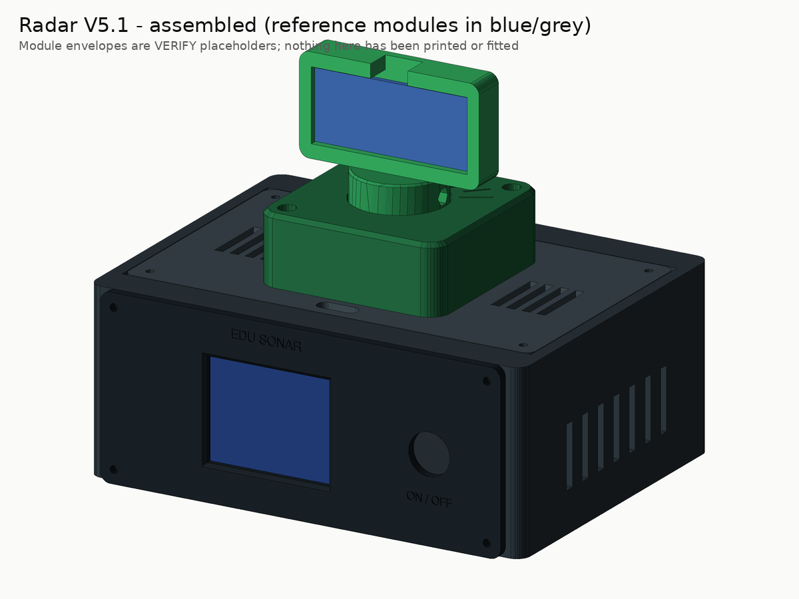

Assembly
⚠️ Educational instrument, not safety equipment. It measures with sound, shows a radar-style picture, and must never be used for obstacle avoidance, people detection or any safety decision. The angle on screen is the commanded servo position, not a measured one.
Status: this procedure is written from the CAD model and the module datasheets. It has not yet
been carried out on a real build — expect to correct it, and record what you find in
VALIDATION.md.

Print the build packet — the same steps as tick boxes, with the wire list, coupon sheet and the physical test sheet.
Battery and electrical safety (read before stage 3)
- The 3 A fuse on the battery positive lead is mandatory. Fit it before anything else touches the cell.
- Never connect a bare cell to the ESP32 VIN or to the servo. Only the charger module's 5 V output feeds the scanner.
- Never solder to the cell. Never put two cells in series. Use a protected cell.
- Secure the holder, not the cell. No screw tips, sharp leads or zip-tie ends may press on the cell wrapping.
- Heat-shrink every power joint. Keep power leads short and use 22 AWG.
- While prototyping, do not leave it charging unattended, and charge on a non-flammable surface.
- If the cell, charger or wiring gets hot, smells, swells or hisses: switch off, unplug USB-C, move it somewhere safe.
Words used on this page
| Term | Meaning |
|---|---|
| Spline | The toothed output shaft of the servo. The factory horn grips it. |
| Horn | The plastic arm that came with the servo. Here it is screwed inside the rotor hub. |
| Axial play | How far the hub can lift before it touches the keeper lip. |
| Harness | All the wires that plug onto the ESP32, including the J1 power plug. |
| VERIFY | A dimension in the CAD file that depends on your exact module — measure it. |
Stage 1 — fit coupon
Print and test the coupon as described in PRINTING.md.
Adjust any VERIFY variable that needs it, re-run python scripts/render_cad.py, and only then continue.
Stage 2 — servo-fit subset
Parts: 03 roof, 04 rotor hub, 05 turret keeper, the servo with its factory double-arm horn, 2× M2×6, 4× M2×8, M2 tap.
- Tap the pilots in the roof (servo flange and keeper bosses) and the hub (two horn holes) with the M2 hand tap. Back the tap out often to clear chips.
- Servo into the roof. From the top, drop the servo body through the rectangular cut-out, cable end first, so the output spline sits in the centre of the turret position. The flange rests on the roof's top face. Fix it with 2× M2×8 through the flange holes.
- Horn into the hub. Pull the horn off the servo. Lay it in the slot on the underside of the hub and fix it with 2× M2×6 from below through the horn's arm holes (
HORN_SCREW_R= 12 mm is a VERIFY value — use the holes that line up). - Centre the servo before fitting the hub. Flash the firmware with
CENTER_ONLY = true(stage 4 explains flashing; for this step you can power the ESP32 and servo from a bench 5 V supply). The servo moves to 90° and holds. - Fit the hub. Press the hub (with the horn inside) onto the spline so the pointer groove on the hub faces straight back, toward +Y (away from where the LCD will be). Drive the servo's own horn screw through the access hole in the middle of the hub's socket.
- Fit the keeper over the hub and screw it to the roof with 2× M2×8 through the counterbored holes (diagonal corners).
- Gate checks (record in
VALIDATION.md, test T-FIT-3): * the hub lifts about 0.2–0.6 mm before touching the keeper lip; * by hand, with the servo unpowered, the hub turns smoothly through the whole tick range (30°–150°); * the pointer groove lines up with the 90° tick. If it binds, see the shim advice inPRINTING.md.
Set CENTER_ONLY back to false before the final upload.
Stage 3 — bench power (no ESP32 yet)
Parts: USB-C breakout, DFR1026, cell holder + protected cell, 3 A fuse and holder, latching switch, 1000 µF capacitor, multimeter.
Wire only the power section of WIRING.md (rows P01–P14), following labels, not
colours. Then:
- With no cell inserted, check with the multimeter that no power net is shorted to GND.
- Insert the cell. Switch ON. Measure
OUT_5V→GNDandLOAD_5V→GND(expect about 5 V). - Switch OFF.
LOAD_5Vshould drop to 0 V;OUT_5Vbehaviour is part of the open issue. - Plug in USB-C with the switch OFF — the charger should indicate charging. (T-PWR-5)
- Run the open-issue tests T-PWR-3 (OFF → ON restart after 5 s, 60 s and 10 min) and record the
results. If the output does not return by itself, stop and choose Option A or B in
WIRING.md.
Stage 4 — flash and bench run
Install the toolchain once
- Arduino IDE 2: File → Preferences → Additional boards manager URLs:
https://raw.githubusercontent.com/espressif/arduino-esp32/gh-pages/package_esp32_index.json. Boards Manager → install esp32 by Espressif Systems. Library Manager → install Adafruit ST7735 and ST7789 Library (accept its dependencies Adafruit GFX Library and Adafruit BusIO). - Or arduino-cli:
arduino-cli compile --profile esp32-core3 firmware/Radar_V5installs the exact versions pinned infirmware/Radar_V5/sketch.yaml.
Flash
Easiest: the web app's Flash page (Chrome/Edge) installs the release firmware with one button. Otherwise follow the programming procedure: switch OFF, unplug the whole harness from the ESP32 including J1, connect the ESP32's own USB data port, select board ESP32 Dev Module, upload, unplug, re-connect the harness, switch ON.
Bench-run gates (T-FW-1 … T-FW-5)
- The splash screen appears ("EDU SONAR … NOT a safety device"), then the green fan grid and the sweep.
If the picture is shifted, mirrored or has wrong colours, change
TFT_INIT_TAB,TFT_ROTATIONorTFT_INVERT(screen revisions differ). - If the sweep line moves the opposite way to the head, set
REVERSE_SERVO = true. - Open the serial monitor at 115 200 baud: each line is
angle_deg,distance_cm(−1 = no echo). After every pass the firmware prints the measured step time — record it (T-FW-4). - Put a flat object (a book) at 30, 100 and 150 cm on the 90° line (tape measure from the sensor face) and record what the screen shows (T-FW-5).
- Calibrate travel without hitting the stops (T-CAL-1): set
CALIBRATE_SERVO = true; the head steps 30° → 90° → 150° with 4 s holds and prints each pulse width. Compare with the keeper ticks and nudgeSERVO_US_AT_0/SERVO_US_AT_180in small steps. If you ever hear the servo buzz or strain at an end, you have gone too far — back off. SetCALIBRATE_SERVO = falseafterwards.
Stage 5 — full print and final assembly
Print P1 and the rest of P2 (sensor head). Then:
- Front panel. Push the 12 mm switch through the panel and tighten its nut from behind (the body has a Ø17 mm pocket for the nut). Seat the LCD face-first between the four corner locators on the back of the panel; hold it with two strips of double-sided foam tape on the PCB margins (never on the glass). Fix the panel to the body with 4× M2×8.
- Inside the body (see the layout picture below): * ESP32 on the two end supports, pins down, held with foam tape; the header rows hang free between the supports. Its USB port faces the side you can reach with the roof off. * Cell holder across the two zip-tie anchors at the rear; straps or ties go around the holder. * USB-C breakout on the rear cradle, receptacle flush with the rear opening; foam tape underneath. * DFR1026 on foam tape near the USB-C breakout. Fuse holder in the positive lead, near the cell. * 1000 µF capacitor at the servo end of its supply branch.
- Sensor head. Fit the HC-SR04 header-up (the header goes through the notch in the top rim), transducers through the two windows, 4× M2×12 from the front with nuts on the back.
- Head onto the hub. Push the keyed mast into the hub socket (it only fits one way) and fix it with the M2×20 cross-bolt: head on the counterbored side, nut in the hex pocket.
- Sensor cable. Route the four sensor leads from the header, behind the head, down through the roof slot. Leave a slack loop long enough for the head to reach both 30° and 150° without tugging — about 60 mm is a starting point. Nothing may touch the transducers or cross in front of them.
- Roof. Lower the roof (with servo, hub, keeper, head) into its pocket and fix with 4× M2×8.
- Four rubber feet under the body. Check the engraved label on the rear wall is legible.
- Final gates (T-SWP-1, T-PWR-4, T-RUN-1, T-THM-1): powered sweep clears the keeper and does not snag the cable; one-hour run without drop-outs; runtime on a full charge; charger and ESP32 regulator temperatures after 30 minutes.


Source: docs/ASSEMBLY.md — generated by scripts/build_site.py